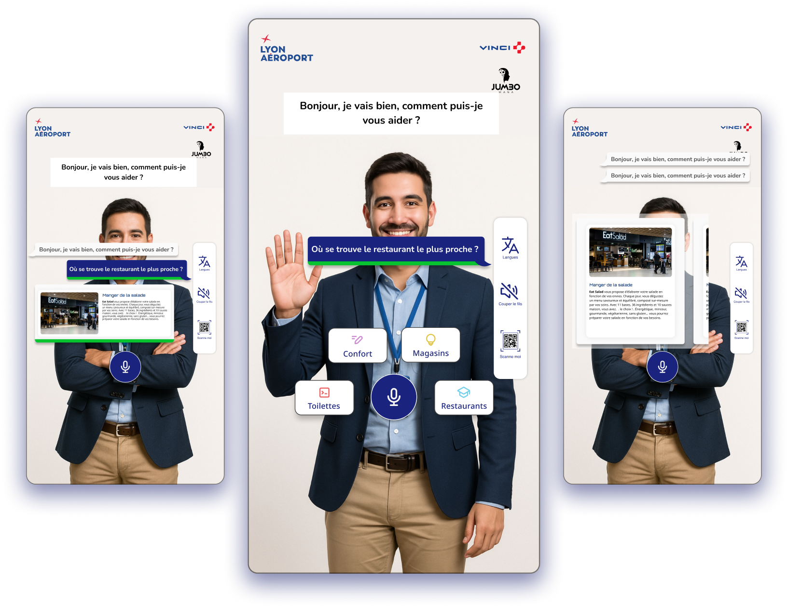
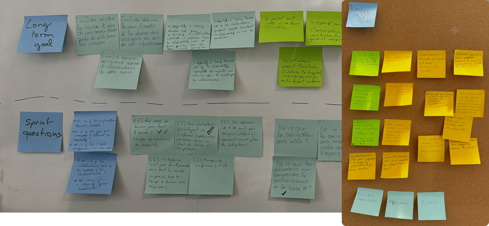
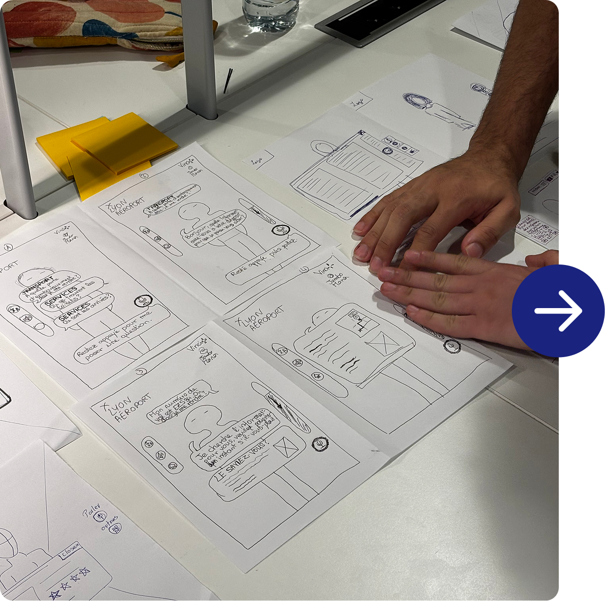
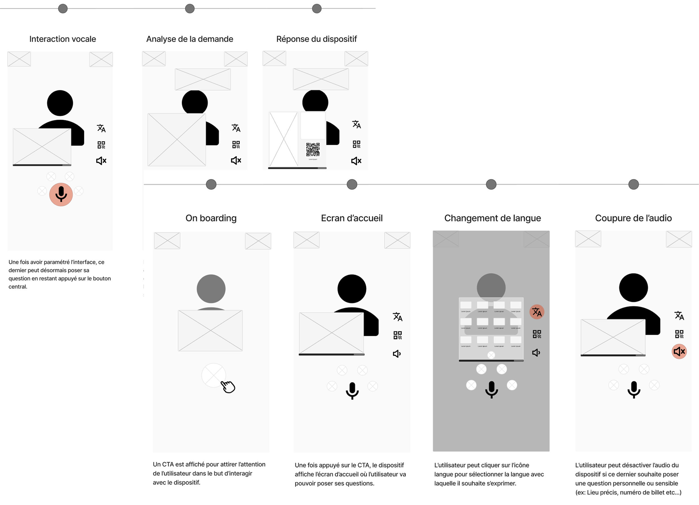
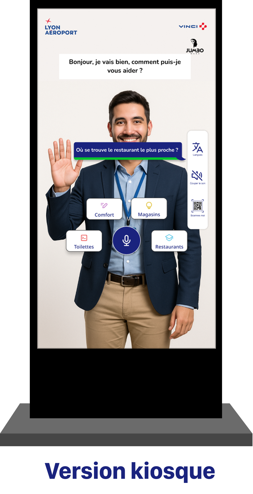
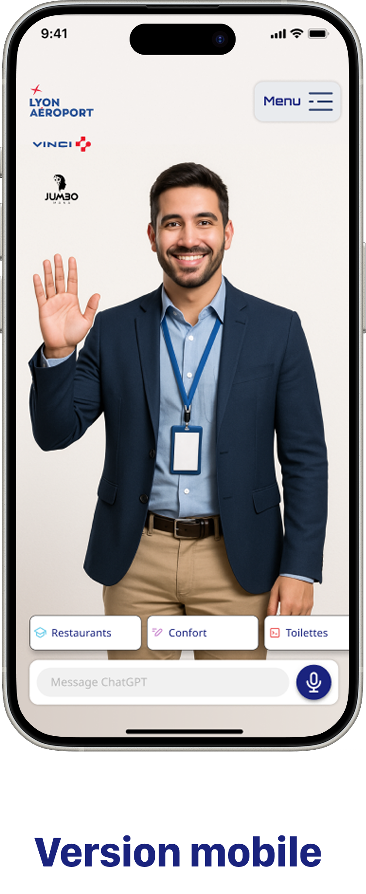
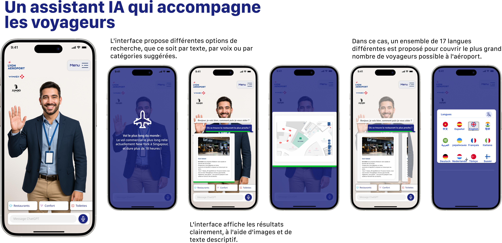
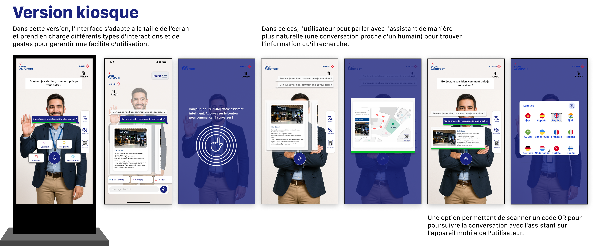
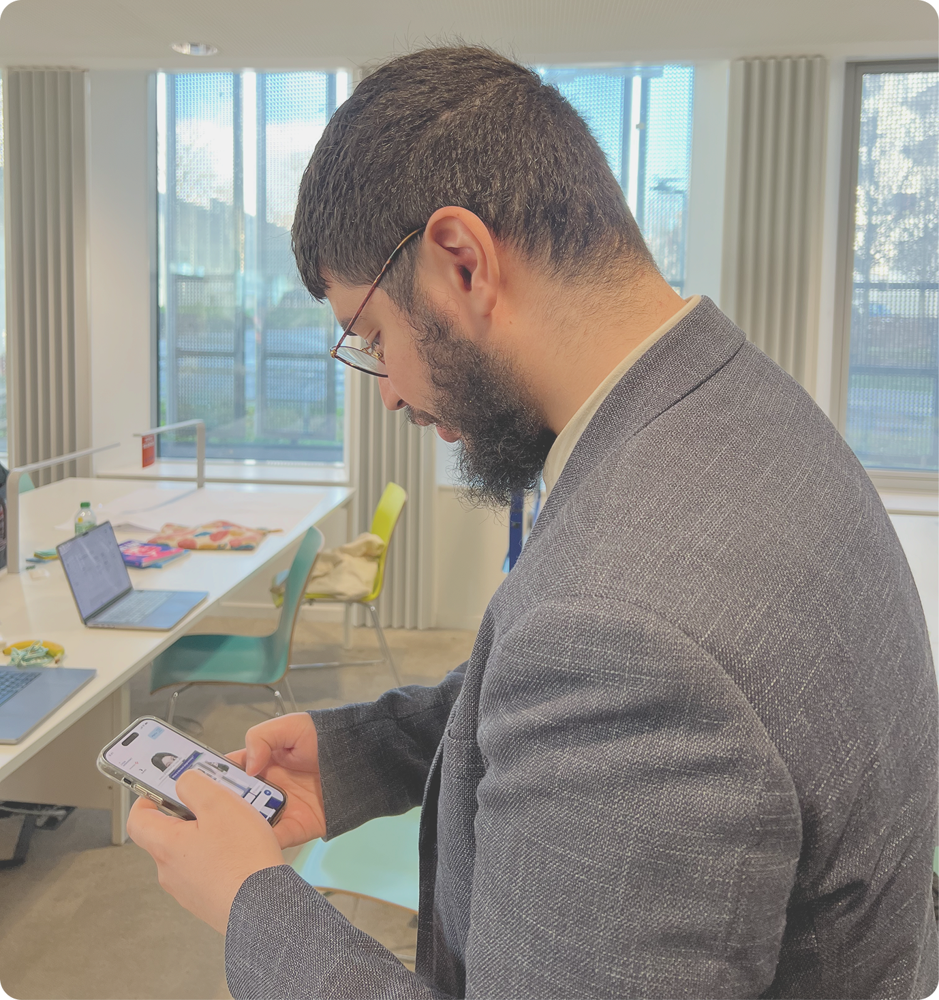

JumboMana
UX Designer
Logiciel
Aéroport Lyon-Saint-Exupéry – Projet AI Assistant
Le défi était de concevoir une expérience claire et engageante, capable de capter l'attention dans un environnement aussi fréquenté sans être confondue avec de la publicité. L'interface était nécessaire pour faciliter une compréhension rapide des fonctionnalités, garantir une utilisation fluide et compléter efficacement les systèmes d'information existants à l'aéroport.
Objectifs de conception :
- Offrir un service intuitif et accessible capable de servir des millions de voyageurs ayant des besoins, des langues et des niveaux de familiarité différents avec l'aéroport.
- Réduire la résistance des utilisateurs grâce à un avatar convivial et à une interaction naturelle (toucher ou vocale), rendant l'assistant accessible à tous.
- Améliorer l'orientation à l'aide de cartes interactives, de codes QR et de réponses précises et contextuelles pour aider les voyageurs à naviguer efficacement.

Défi de conception
Dans quelle mesure la mise en œuvre du système compléterait-elle efficacement les services d'information traditionnels de la Gare du Nord, sans provoquer de confusion ni de résistance chez les usagers, tout en restant identifiable, compréhensible et accessible, et en s'adaptant aux besoins et aux différents formats des usagers ?
Premières questions concernant le besoin de l'utilisateur
Qui ?
➔ Utilisateurs (visiteurs, voyageurs, compagnons, etc.) ➔ Recherche d'informations, d'orientation ou d'assistance
Quand ?
➔ Lors d'un voyage à l'aéroport ➔ En cas de besoin d'orientation ou d'information en temps réel
Où ?
➔ Aéroport Lyon-Saint-Exupéry ➔ Zones de transit, halls d'arrivée et départ, services
Quoi ?
➔ Assistant IA conversationnel multiformat ➔ Kiosque tactile et application mobile
Réflexion sur notre démarche à travers un outil de conception
Nous avons structuré notre processus de conception à l'aide d'un outil collaboratif permettant de cartographier les insights utilisateurs, de prioriser les fonctionnalités clés et de valider les hypothèses de conception. Cette approche a facilité l'alignement de l'équipe et la prise de décisions éclairées à chaque étape du projet.

Phase d'idéation
Nos wireframes dans un storyboard. Le projet comprenait deux versions d'interface : une pour les appareils mobiles et une autre conçue pour les grands écrans tactiles, comme ceux que l'on trouve couramment dans les aéroports. Le storyboard nous a aidé à déterminer comment les utilisateurs navigueraient dans chaque version, en mettant l'accent sur les moments clés d'interaction, d'accessibilité et de cohérence du flux. Cette étape était essentielle pour aligner la vision de conception sur toutes les plates-formes.


Tests utilisateur
Lors des tests utilisateurs, les participants ont interagi avec succès avec les fonctionnalités clés de l'interface. Ils ont pu couper le son, changer de langue, rechercher un restaurant et terminer la tâche en localisant l'itinéraire menant au restaurant sélectionné.
Version kiosque

Service mobile




Commentaires des utilisateurs
Ces résultats indiquent que l'interface était généralement intuitive et aidait les utilisateurs à atteindre leurs objectifs avec un minimum de frictions.
Certains utilisateurs ont réussi à changer la langue.
Certains utilisateurs ont pu couper le son.
Certains utilisateurs ont réussi à rechercher un restaurant.
Certains utilisateurs ont terminé la tâche en trouvant l'itinéraire du restaurant.